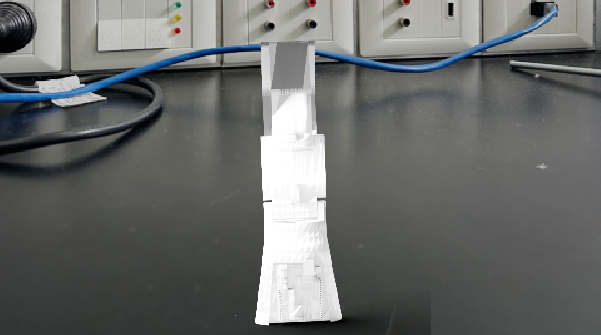

TRINOVA BIONICS
Tecnología, Arte e Identidad: Rompiendo Barreras Físicas
Conoce Nuestra MisiónTecnología, Arte e Identidad: Rompiendo Barreras Físicas
Conoce Nuestra MisiónEn TriNova Bionics creemos que cada persona merece romper las barreras físicas y reclamar la plenitud de su potencial.
Inspirados por la fuerza indomable y una estética futurista inspirada en el uso del neon, nos comprometemos a transformar la realidad de quienes enfrentan desafíos físicos mediante soluciones tecnológicas que no solo restauran funciones, sino que también empoderan y celebran la individualidad.
Nuestra misión es integrar arte, ciencia y tecnología para crear prótesis que sean sinónimo de esperanza y libertad.Trabajamos para que cada dispositivo sea una extensión de la identidad, permitiendo que nuestros usuarios se sientan parte de un futuro donde la tecnología es inclusiva, hermosa y accesible.
El mercado de prótesis se ha enfocado tradicionalmente en dispositivos estándar, a menudo voluminosos y con una ergonomía limitada.Muchos usuarios se enfrentan a desafíos relacionados con el peso, la falta de precisión en el control y una desconexión emocional con la estética del producto.
Este enfoque integral responde a una demanda social y médica: mejorar la calidad de vida a través de dispositivos que integren tecnología avanzada y un diseño inspirador.
Nuestros usuarios tienen entre 20 y 50 años, han sufrido amputación parcial o pérdida de parte de la mano (por accidente, condición médica o de nacimiento) y son activos con fuertes aspiraciones de independencia.
Buscan una prótesis que se alinee con su identidad, ofrezca comodidad, control y una estética que represente resistencia y visión futurista.Valoran la innovación y la expresión de su individualidad.
Buscamos ser referentes mundiales en la creación de prótesis que trasciendan lo funcional para convertirse en extensiones de la identidad personal y el espíritu innovador.


El cerebro de la prótesis se controla con una placa de Arduino, como se ilustra en el siguiente diagrama de conexiones:

Aca hicimos el renderizado en blender, una demostracion sobre como se veria en la vida real:
TriNova Bionics se posiciona en la intersección de la innovación tecnológica y la estética inspirada en universos icónicos.Ofrecemos control mediante comandos de voz (característica única) , un diseño acogedor y un precio competitivo.